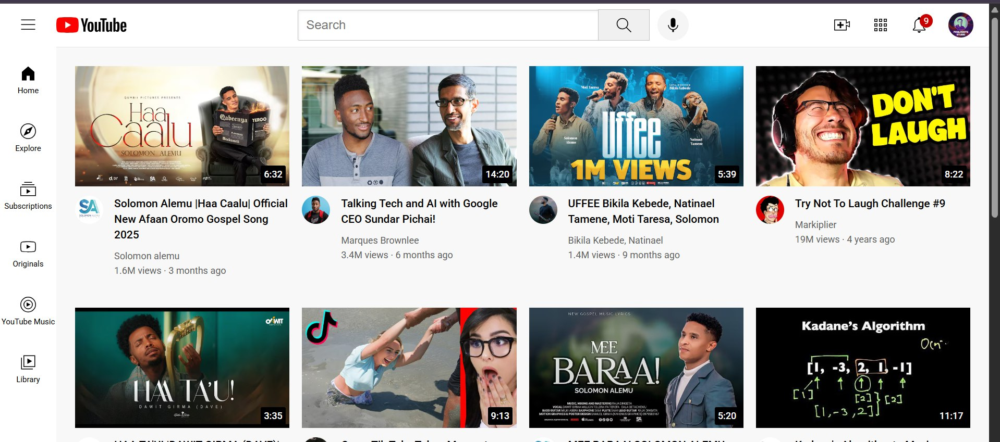

YouTube Clone
Pixel-focused YouTube UI clone featuring search, category filters, and a responsive video player layout.

HTML
CSS
JavaScript
- Responsive layout matching YouTube's design.
- Search and category filtering system.